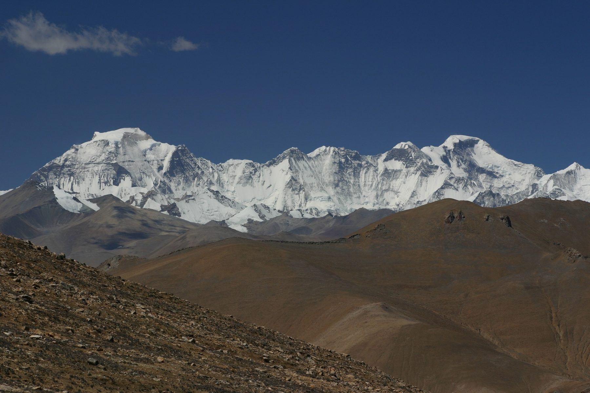
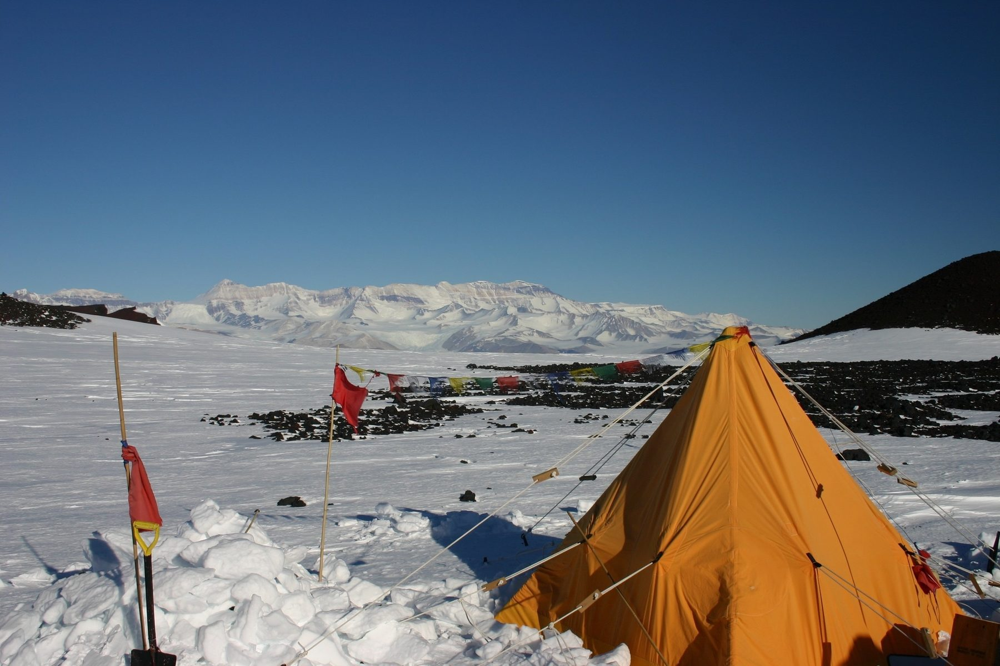
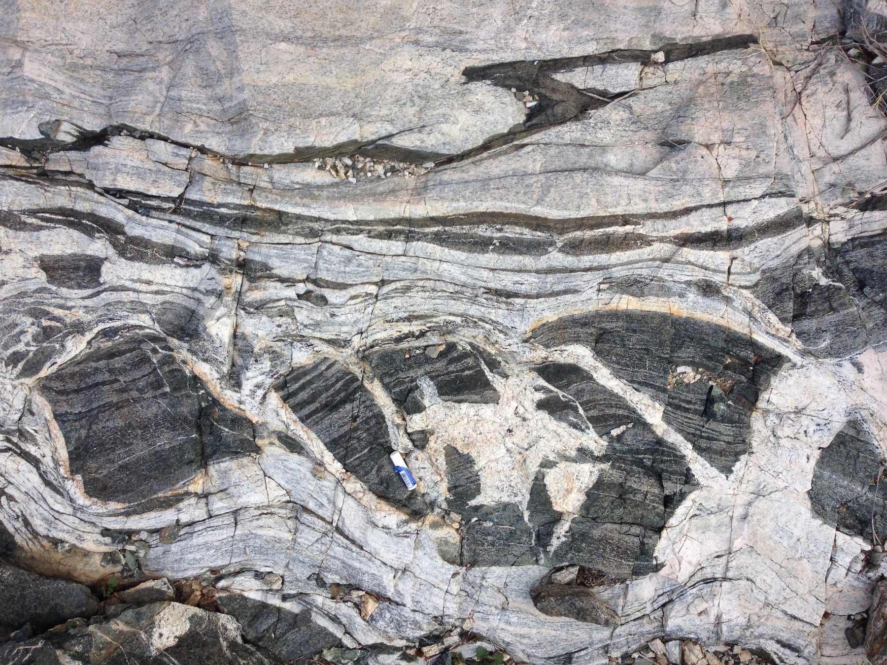
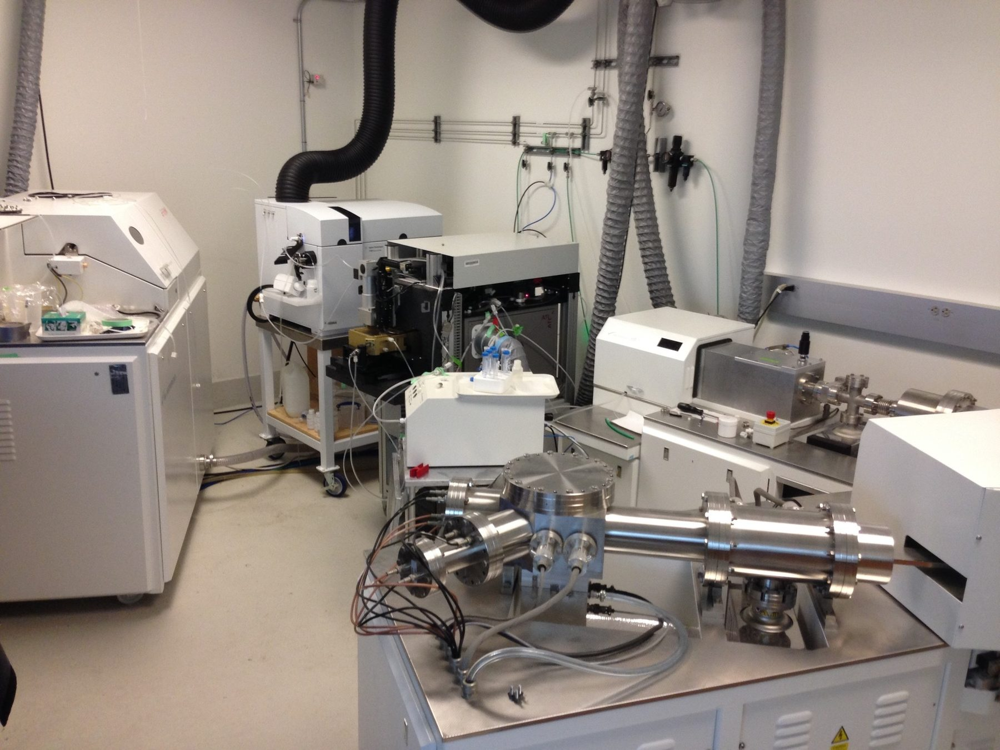
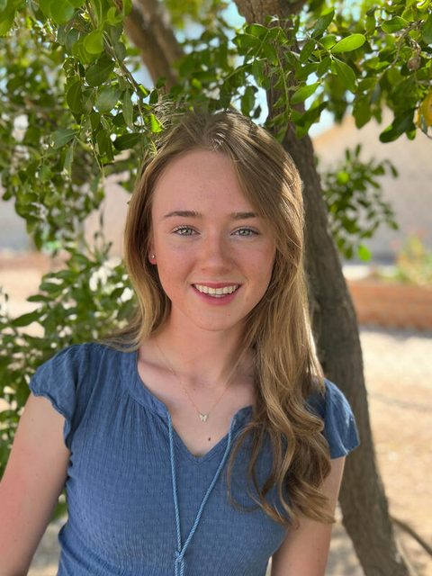
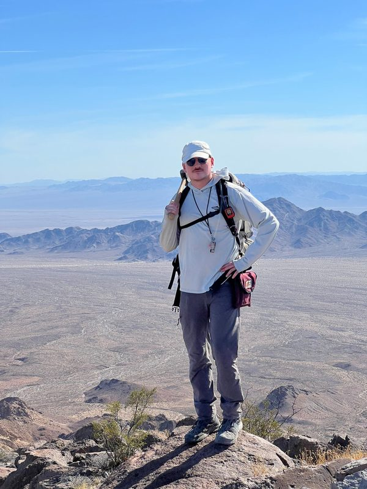
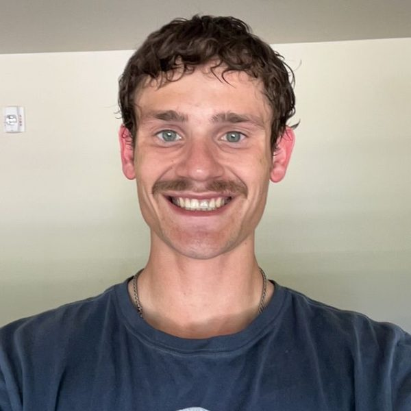
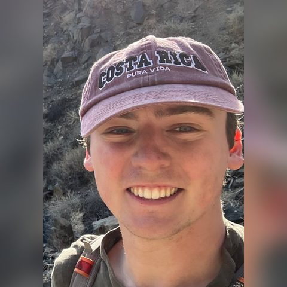
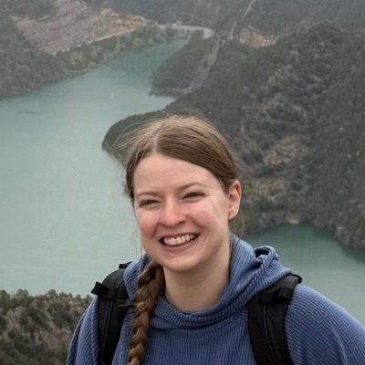
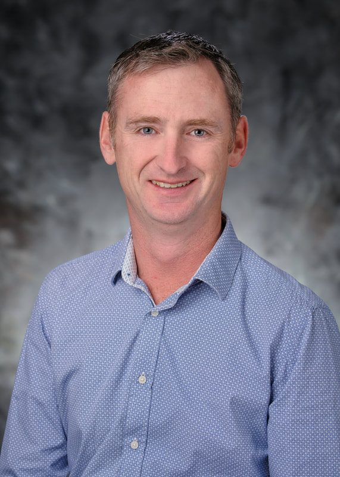

Department of Earth Science, UC Santa Barbara
The age of a mountain belt is written in its minerals.
We date the minerals in mountain belts to learn how continental crust is deformed, melted and rebuilt, with a focus on the Himalaya, Antarctica and New Zealand, and we develop the laser ablation methods that make the dating possible.
Research
Dating the processes that build mountain belts
Each project pairs fieldwork with analytical work in our own laboratories, so the questions we ask in the field shape the analytical methods we develop.

Himalayan TectonicsHow does the middle crust of a continental collision deform, melt and return to the surface? We date the Himalayan metamorphic core to test whether it moved as a flowing channel or as a stack of thrust sheets. Read more
Antarctic TectonicsHow does a continental arc grow, end and evolve? The Ross Orogen and the later Permian to Jurassic magmatism of the Gondwana margin test whether arcs build new crust or recycle old crust. Read more
Rare Earth Element MineralizationWhere and when do rare earth and other critical-mineral deposits form? We date the magmatic and hydrothermal events behind mineralization in California, Cameroon, Iran and beyond. Read more
New techniques in geochronologyTime-of-flight imaging, split stream and single shot laser ablation that measure dates and chemistry together from the same volume of mineral. Read moreCapability
Time-of-flight imaging at UC Santa Barbara
Our Nu Vitesse ICP-ToF-MS records the whole mass spectrum from every laser pulse, so a single map carries both the dates and the chemistry of a mineral.
- m/z 23 to 238every element in every pixel
- 1000 Hzlaser rate for imaging
- About 90×faster than spot analysis
- About 1 mswashout, so single pulses stay distinct
News
Recent activity
- Short course on time-of-flight mass spectrometry at GSA Connects 2026 in Denver, taught with Andrew Kylander-Clark and Morgan Adamson. Details
- New NSF award with Robert Holder (University of Michigan) on partial melting and heat-producing elements in continental crust. Funding
- Adamson, Cottle and Kylander-Clark publish a mechanistic study of matrix effects in zircon U-Th/Pb dating by single-particle LA-ToF-MS. Chemical Geology
Publications
Selected papers
- A mechanistic study of matrix effects in zircon U-Th/Pb geochronology using single-particle laser ablation time-of-flight mass spectrometryAdamson, Cottle and Kylander-Clark 2026, Chemical Geology
- A long-lived, compositionally homogeneous arc: Re-evaluating the origin of the Granite Harbour Intrusives in Northern Victoria Land, AntarcticaCottle and Erickson 2026, Lithos
- Large-scale crustal growth driven by LIP magmatism during the PaleoproterozoicSimões et al. 2025, Nature Communications
- Geodynamic controls on slab window volcanism: Insights from the spatiotemporal evolution of the Coast Range Volcanics, California, USAAntilla et al. 2025, Geology
- The making of Mount Everest: Channel flow and low-angle normal faults in the compressional Himalayan orogenSearle et al. 2024, Journal of the Geological Society
- Ultra-depleted hydrogen isotopes in hydrated glass record Late Cretaceous glaciation in AntarcticaNelson et al. 2022, Nature Communications
Facilities
Analytical laboratories at UC Santa Barbara
From sample preparation to in situ isotopic analysis, the laboratories that support our research.

People
Current graduate students
We are always looking for people to join our group. If any of the projects interest you, get in touch.

Morgan AdamsonPh.D., Himalayan Tectonics
Ryan EdenPh.D., Basin and Range Tectonics
Alec BaudryPh.D., Ocean Island Geochronology
Griffin EasthouseM.Sc., Rare Earth Element Mineralization in Nevada
Brooke PryorPh.D., Alkaline Magmatism

About
Field geologist, with a laboratory attached
I am a Professor of Geology in the Department of Earth Science and the Earth Research Institute at UC Santa Barbara, and Faculty Director of the UCSB Natural Reserve System. My group works out when and how continental crust is deformed, melted and rebuilt, using mapping, petrology and the ages recorded in minerals.
I trained at the University of Otago in New Zealand (B.Sc. 2000, M.Sc. 2002) and completed a D.Phil. at the University of Oxford in 2008. Most of my fieldwork since has been in the Himalaya, Antarctica and New Zealand, and I share part of it through Antarctica360.
The laboratory side matters as much to me as the field. We build laser ablation methods that measure mineral ages and compositions in place, and we use them on our own samples first.
Recognition
- 50 Under 50 Award, Geological Society of America. 2026. GSA website
- Fellow, Geological Society of America. 2023
- Fellow, Mineralogical Society of America. 2021
- 2018 Emerging Leader in Atomic Spectroscopy award. Spectroscopy Online
- Mineralogical Society of America, Distinguished Lecturer 2016-17. MSA website
- Geological Society of America Mineralogy, Geochemistry, Petrology, & Volcanology Division Early Career Award. 2016. GSA MGPV website
Contact
Join the group or collaborate on a project
Send a short note with your background and the project that caught your attention.
cottle@geol.ucsb.eduDepartment of Earth Science
University of California, Santa Barbara
Santa Barbara, CA 93106-9630
Tel: (805) 893-7315